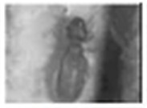

먼지다듬이
| 생김새 | 크기 | 활동시기 및 서식장소 | 습성/생활 | 수명 |
|---|---|---|---|---|
 먼지다듬이 | 몸길이 1mm~7mm 내외 | 봄이나 여름에 주로 활동하며 따뜻하고 습기가 많은 계절엔 더욱 활발히 움직인다. 가구틈,벽과벽사이, 천장, 묵은 책, 벽지 사이 등에서 많이 서식함. | 세계적으로 1,650종이 있으며 우리나라에서는 3과가 알려져 있다.주로 가구나 벽틈 그리고 장판 가장자리 드에서 집단으로 서식하는데 외부에서 주택내로 유입되는 종은 아니며, 외부에서 들어오는 물건에 의해 들어오는 경우가 대부분이다. 먹이는 주택내의 미세한 유기물(곡물가루)이나곰팡이, 균류, 생선가루, 꽃가루, 먼지 등을 먹고 생활한다. 최근에는 친환경자래 즉, 방부재가 들어가지 않은 녹말풀 등을 이용하여 도배를 함으로 오염된 가구(싱크대)나 목재등이 들어오면서 대발생하는 경우가 많다.다듬이 벌레는 옅은회색 또는 갈색을 띄고 있으며 마르지 않은 목재,석고보드를 사용한 신축건물이나 가구에서 종종 발생하기도 하며 23도씨에서 29도씨의 온도와 70~90%의 습도가 발생했을시 많이 발생한다. 대부분 알로서 이동이 가능하며 매우 번식력이 크다. 다듬이는 모두 암놈이며 단성생식을 한다, 평균60개의 알을 놓으며 1년에 7~8세대를 형성하여 겨울이 되면 성충은 모두 죽고 봄이 되면 살아남은 알은 부화를 하여 온도가 높고 습도가 많은 여름에 많이 번성한다. 분포는 현재 전세계에 분포되어있다 | 수명은 1~2달 |